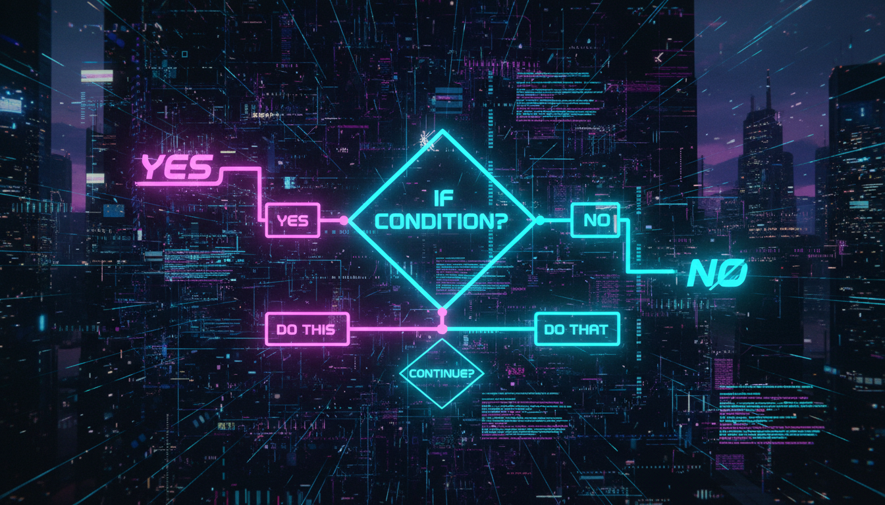

Розгалуження програми, вкладені умови, ланцюжки if-else if

Рис. 8.1 — Умовне розгалуження if-else
Оператор if дозволяє виконувати код тільки за певної умови. Це найбазовіший спосіб розгалуження програми.
// Синтаксис:
if (умова) {
// код, що виконується, якщо умова істинна (true)
}
// Приклад:
#include <iostream>
int main() {
int age;
std::cout << "Введіть ваш вік: ";
std::cin >> age;
if (age >= 18) {
std::cout << "Ви повнолітній." << std::endl;
}
return 0;
}// Синтаксис:
if (умова) {
// код, якщо умова true
} else {
// код, якщо умова false
}
// Приклад:
#include <iostream>
int main() {
int number;
std::cout << "Введіть число: ";
std::cin >> number;
if (number % 2 == 0) {
std::cout << number << " — парне число." << std::endl;
} else {
std::cout << number << " — непарне число." << std::endl;
}
return 0;
}#include <iostream>
int main() {
int score;
std::cout << "Введіть бал (0-100): ";
std::cin >> score;
if (score >= 90) {
std::cout << "Оцінка: Відмінно (A)" << std::endl;
} else if (score >= 80) {
std::cout << "Оцінка: Добре (B)" << std::endl;
} else if (score >= 70) {
std::cout << "Оцінка: Задовільно (C)" << std::endl;
} else if (score >= 60) {
std::cout << "Оцінка: Достатньо (D)" << std::endl;
} else {
std::cout << "Оцінка: Незадовільно (F)" << std::endl;
}
return 0;
}#include <iostream>
int main() {
int age;
bool hasLicense;
std::cout << "Введіть вік: ";
std::cin >> age;
std::cout << "Чи маєте права? (1/0): ";
std::cin >> hasLicense;
if (age >= 18) {
if (hasLicense) {
std::cout << "Можете керувати автомобілем." << std::endl;
} else {
std::cout << "Потрібно отримати права." << std::endl;
}
} else {
std::cout << "Ви занадто молоді для водіння." << std::endl;
}
return 0;
}#include <iostream>
#include <map>
int main() {
std::map<std::string, int> scores = {{"Ivan", 85}, {"Maria", 92}};
// Змінна it існує тільки в блоці if
if (auto it = scores.find("Ivan"); it != scores.end()) {
std::cout << "Бал Івана: " << it->second << std::endl;
} else {
std::cout << "Студент не знайдений." << std::endl;
}
// it тут НЕДОСТУПНО!
return 0;
}// Перевірка року на високосність
#include <iostream>
int main() {
int year;
std::cout << "Введіть рік: ";
std::cin >> year;
if ((year % 4 == 0 && year % 100 != 0) || (year % 400 == 0)) {
std::cout << year << " — високосний рік." << std::endl;
} else {
std::cout << year << " — не високосний рік." << std::endl;
}
return 0;
}
// Калькулятор простих операцій
#include <iostream>
int main() {
double a, b;
char op;
std::cout << "Введіть перше число: ";
std::cin >> a;
std::cout << "Введіть операцію (+, -, *, /): ";
std::cin >> op;
std::cout << "Введіть друге число: ";
std::cin >> b;
if (op == '+') {
std::cout << "Результат: " << (a + b) << std::endl;
} else if (op == '-') {
std::cout << "Результат: " << (a - b) << std::endl;
} else if (op == '*') {
std::cout << "Результат: " << (a * b) << std::endl;
} else if (op == '/') {
if (b != 0) {
std::cout << "Результат: " << (a / b) << std::endl;
} else {
std::cout << "Помилка: ділення на нуль!" << std::endl;
}
} else {
std::cout << "Невідома операція!" << std::endl;
}
return 0;
}